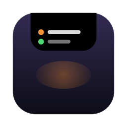

Every Claude Code agent,
live at your notch.
See every running session and sub-agent at the top of your screen. Approve permissions without finding the terminal.
It starts with one session.
Then a second.
A third. A fourth.
Now, which one is waiting on you?
Notch Agents keeps count, right at the notch.
Look up. Every session and sub-agent, the tool it is on, how long it has run.
When Claude needs your OK, it asks here.Allow or deny without finding the terminal. Go on, it works.
When the work is done, it gets out of your way.
Sample sessions. The island runs the app's own state logic.
Eight hooks in.
One pill out.
Claude Code fires a hook when a session uses a tool, starts a sub-agent, asks for permission or finishes. A nine-line script hands each event to a private socket on your Mac and exits. The app turns those events into what you see at the notch.
- Claude Code hook
- ~/.notch-agents/hook.sh
- ~/.notch-agents/sock
- Notch Agents
- the pill at your notch
stdin→ ~/.notch-agents/sock
stdout
Sample payloads, same shape Claude Code sends. Nothing on this page talks to your machine.
It never leaves your Mac.
- Network
- None. The app has no network code at all.
- Your code and prompts
- Held in memory while an agent runs. The app never writes them to disk.
- The socket
~/.notch-agents/sock, mode 0600. Only your user account can talk to it.- What install changes
- Eight entries in
~/.claude/settings.json, after a timestamped backup. One menu item removes them again. - If the app is not running
- Every hook exits at once with status 0. Claude Code behaves exactly as it did before.
- Permission prompts
- Wait up to 25 seconds for your answer at the notch. After that, Claude asks in the terminal as usual.
- Source
- MIT licensed. Read every line on GitHub.
~/.notch-agents/hook.shThe whole script. This is all that runs inside Claude Code.#!/bin/bash
SOCK="$HOME/.notch-agents/sock"
[ -S "$SOCK" ] || exit 0
P="$(cat)"
if printf '%s' "$P" | /usr/bin/grep -q '"hook_event_name" *: *"PermissionRequest"'; then
printf '%s\n' "$P" | /usr/bin/nc -U -w 30 "$SOCK" 2>/dev/null
else
printf '%s\n' "$P" | /usr/bin/nc -U -w 1 "$SOCK" >/dev/null 2>&1
fi
exit 0Questions.
Does it work on a Mac without a notch?
Yes. The pill sits at the top centre of the screen. It is tuned for notched MacBooks but does not need one.
Can it slow down or break Claude Code?
No. For every normal event the script hands the payload to a local socket and exits with status 0, even when the app is not running. The one exception is a permission request: it waits up to 25 seconds for your answer at the notch, then Claude asks in the terminal as usual.
What about questions Claude asks me?
They show up on the island as a heads-up, so you know a session is waiting. You answer them in the terminal, because Allow and Deny cannot pick an option.
macOS says it cannot verify the app.
This build is not notarized yet. On first launch, right-click Notch Agents in Applications and choose Open. On macOS 15 or later, open System Settings, go to Privacy & Security and choose Open Anyway. Or build it yourself from source: it is one script.
Nothing shows up at the notch. What should I check?
That the app is running (a capsule icon in the menu bar), that the hooks are installed, and that you restarted your Claude Code sessions afterwards. Sessions started before the install do not pick up new hooks.
Do I have to pay anything?
No. Every feature is in the free download and the code is MIT licensed. The one-time payment below is optional support and unlocks nothing.
How do I remove it?
Choose Remove Claude Code hooks from the menu bar icon, quit the app and delete it from Applications. Your settings backups stay next to ~/.claude/settings.json.
Is this an Anthropic product?
No. Notch Agents is an independent open-source project. It is not affiliated with or endorsed by Anthropic. "Claude" is a trademark of Anthropic.
Chip in, if it is useful.
Notch Agents is free and MIT licensed, and it stays that way. If it saves you a walk to the terminal, a one-time payment helps keep it maintained.
- Price
- ₹449, about $5
- Billing
- Once. No subscription and no account.
- What you get
- Nothing is locked. Every feature is in the free download.
- Pay with
- UPI, cards, netbanking or wallets, as shown at checkout.
- Your details
- Razorpay processes the payment. Notch Agents never sees your card or UPI details, and the checkout script loads only when you press Pay.
One-time support
449
about $5 · billed once
Payments are processed by Razorpay.
Put it at your notch.
- Download and open. Drag Notch Agents into Applications and open it. A capsule icon appears in the menu bar.
- Install the hooks. Choose Install Claude Code hooks from that icon, then restart any running Claude Code sessions.
- Work as usual. The pill appears at the notch as soon as an agent starts working.
Or build it yourself
git clone https://github.com/adii9/notch-agents cd notch-agents && Scripts/build-app.sh

Notch Agents
Applications
Drag it across to download.
v0.2.0 · 0.9 MB · macOS 14 or later · Apple silicon and Intel